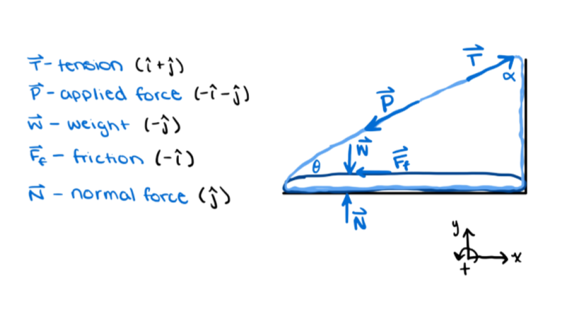

Wheelchair-Accessible Exercise Equipment
September 2022 - December 2022
Worked in a team of six students to design "The SkiSim", an aerobic exercise product for users with limited to no lower limb mobility to physically stimulate the upper and lower body to a certain degree that is mentally engaging, and autonomously usable.
Used the iterative design process and worked with a variety of engineering ethics standards.
Prioritized user requirements and constraints, generated the overall concept, then designed the exercise product.
Once designed, the cable component of the product was analyzed using force calculations to determine if the average adult with lumbar spinal cord injury would be able to propel themselves forward.
A low fidelity prototype was made and the safety accessory and comfort features were tested.
Finally, the product was presented to an audience and a technical report was written collaboratively to document every detail of the project.

